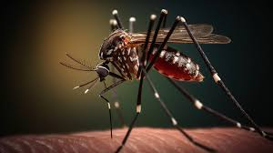
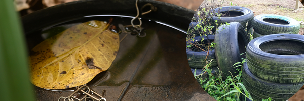

El dengue se transmite a tarves de la picadura de un mosquito infectado. Es una enfermedad que afecta personas de todas las edades, con sintomas que varian entre una fiebre leve a una fiebre incapacitante, acompañado de dolor intenso de cabeza, dolor detras de los ojos, dolor en musculos y articulaciones, y eritema. En Cordoba hay 25 localidades con, al menos, 300 infectados por el virus que transmite el mosquito vector Aedes aegypti. La ciudad de Cordoba, Villa Maria, San Francisco y Bell Ville son las que mas infectdos registran.
¿Como prevenirlo?
Usar repelente de insectos.
Usar camisas de manga larga y pantalones largos holgados.
Evitar el agua estancada para que se crien mas dengues y frotar las paredes de los recipientes con una espomja o cepillo para desprender los huevos de mosquito que puedan estar adheridos.
Fumigar espacios al aire libre
Cambia el agua de bebederos de animales, colectores de desagües de aire acondicionado o lluvia cada 3 dias.
Es importante sensibilizar a la comunidad sobre la prevencion.
¿Que hacer en caso de tener dengue?
Consulte a un proveedor de atencion medica si presenta fiebre o sintomas de dengue. Cuentele acerca de cualquier viaje reciente. Descanse tanto como sea posible. Tome acetaminofeno (tambien conocido como paracetamol fuera de los EE.UU) para controlar la fiebre y aliviar el dolor. ¡No tome aspirina ni ibuprofeno! Beba liquidos en abundancia para mantenerse hidratado. Beba agua o bebidas con electrolitos agregados, Si los sintomas son leves, cuide en la casa a los bebes, niños o miembros de la familia enfermos.
Algunos sintomas posibles son fiebre alta repentina. Dolores musculares y articulares. Erupciones cutaneas. Nauseas y vomitos. En casos severos, puede causar dengue hemorragico